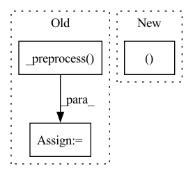

Pattern ID :25597

Before Change
X_test = estimator._preprocess(X_test)
eval_dataset = Dataset.from_pandas(TransformersEstimator._join(X_test, y_test))
else:
X_test = estimator._preprocess(X_test)
eval_dataset = Dataset.from_pandas(X_test)
estimator_metric_backup = estimator._metric
estimator._metric = "rmse"
After Change
estimator._trainer = None
else:
trainer = estimator._trainer
X_test, y_test = estimator._tokenize_text(X_test)
if y_test is not None:
eval_dataset = Dataset.from_pandas(X_test.join(y_test))
In pattern: SUPERPATTERN
Frequency: 3
Non-data size: 3
Instances
Fragment ID: 77870852
Project Name: microsoft/flaml
Commit Name: 21fa6c10ec6f963edbda99e9020ad585ae60a1a5
Time: 2022-08-02
Author: liususan091219@users.noreply.github.com
File Name: test/nlp/test_autohf_custom_metric.py
M Class Name: AnonimousClass
N Class Name: AnonimousClass
M Method Name: custom_metric(11)
N Method Name: custom_metric(11)
M Parent Class:
N Parent Class:
M File Name: test/nlp/test_autohf_custom_metric.py
N File Name: test/nlp/test_autohf_custom_metric.py
M Start Line: 28
M End Line: 31
N Start Line: 27
N End Line: 30
'>
Before Change
from .nlp.utils import load_model
from .nlp.huggingface.trainer import TrainerForAuto
X_test, _ = self._preprocess(X=X_test, **self._kwargs)
test_dataset = Dataset.from_pandas(X_test)
best_model = load_model(
After Change
return predictions.predictions
def predict(self, X_test):
test_dataset, training_args = self._init_model_for_predict(X_test)
if self._task not in NLG_TASKS:
predictions = self._model.predict(test_dataset)
else:
'>
Fragment ID: 77870854
Project Name: microsoft/flaml
Commit Name: 9c00e4272a7d448131aaead72342f52c6a900388
Time: 2022-01-02
Author: 91398474+oberonbot@users.noreply.github.com
File Name: flaml/model.py
M Class Name: TransformersEstimator
N Class Name: TransformersEstimator
M Method Name: predict(2)
N Method Name: predict(2)
M Parent Class: BaseEstimator
N Parent Class: BaseEstimator
M File Name: flaml/model.py
N File Name: flaml/model.py
M Start Line: 693
M End Line: 707
N Start Line: 714
N End Line: 739
'>
Before Change
from transformers import TrainingArguments
from .nlp.utils import load_model
X_test, _ = self._preprocess(X_test, **self._kwargs)
test_dataset = Dataset.from_pandas(X_test)
best_model = load_model(
After Change
self._task in CLASSIFICATION
), "predict_proba() only for classification tasks."
test_dataset, _ = self._init_model_for_predict(X_test)
predictions = self._model.predict(test_dataset)
return predictions.predictions
'>
Fragment ID: 77870851
Project Name: microsoft/flaml
Commit Name: 9c00e4272a7d448131aaead72342f52c6a900388
Time: 2022-01-02
Author: 91398474+oberonbot@users.noreply.github.com
File Name: flaml/model.py
M Class Name: TransformersEstimator
N Class Name: TransformersEstimator
M Method Name: predict_proba(2)
N Method Name: predict_proba(2)
M Parent Class: BaseEstimator
N Parent Class: BaseEstimator
M File Name: flaml/model.py
N File Name: flaml/model.py
M Start Line: 671
M End Line: 684
N Start Line: 709
N End Line: 709